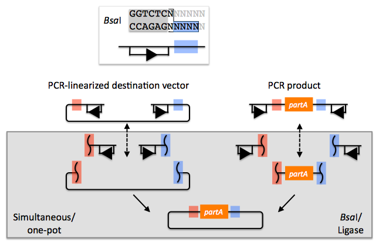
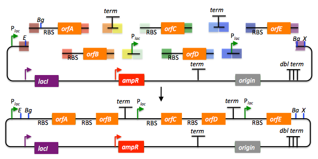
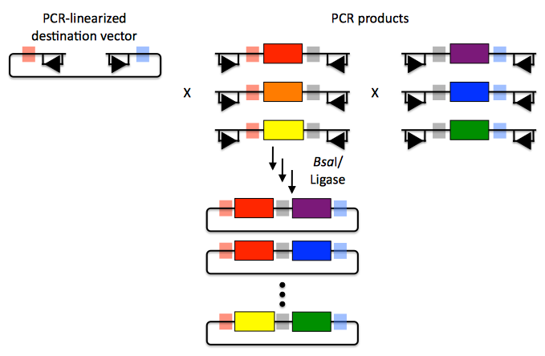

The Golden Gate method and its variants (Engler 2008, Engler 2009, Engler 2011) offers standardized, quasi-scarless, multi-part DNA assembly, and is an excellent choice for combinatorial library construction (see also the "Experimental protocols" section of this manual which contains variations of the Golden Gate protocol).
The Golden Gate method relies upon the use of type IIs endonucleases, whose recognition sites are distal from their cut sites. Although there are several different type IIs endonucleases to choose from, the example below uses BsaI (equivalent to Eco31I) (the Golden Gate method only uses a single type IIs endonuclease at at time).
Golden Gate assembly of partA with a linearized destination vector:

The BsaI recognition sequence "GGTCTC" is separated from its four bp overhang by a single bp, and BsaI activity is independent of the sequences of the single bp spacer and the four bp overhang. The recognition site for BsaI is not palindromic, and is therefore directional. In the notation used here, the recognition site is abstractly represented by a rectangle below the dsDNA line (with an arrowhead on the bottom segment of the rectangle pointing to the cut site), and the four bp overhang sequence is represented by a colored box (with different colors indicating different 4 bp sequences). Using this notation, the PCR product containing partA in the example above is flanked by two BsaI recognition sites, both pointing inward towards partA, with a red overhang at its 5' terminus and a blue overhang at its 3' end. The linearized destination vector is similarly depicted. If the PCR product shown above is mixed with BsaI and ligase, the PCR product is (reversibly) digested, resulting in three DNA fragments (the squiggly line abstractly representing the double-stranded cut), and ligated back together again. The same is true of the linearized destination vector. However, if the PCR product and the linearized destination vector (each of which contains one red and one blue 4 bp overhang) are both mixed together with BsaI and ligase, as shown, the cut linearized destination vector will irreversibly ligate (dead-end reaction product) with the cut PCR product containing partA. This particular ligation is irreversible, because the ligation product no longer contains any BsaI recognition sequences. Thus, over time, all reactions will tend towards the desired assembly product. It should be pointed out that the sequences of the of red and blue 4 bp overhangs are (almost) entirely user-specifiable. In this regard, Golden Gate assembly is scar-less, since we have complete control over the sequence of the resulting assembly product. There are some exceptions to this (such as the overhang sequences themselves must not be palindromic (or they would be self-complimentary), and any two (e.g., the red and the blue) overhang sequences must differ by at least one and preferably two bps so that the different overhangs are not cross-complimentary), but in general this is not an issue, because we can shift the relative overhang position (see the target part order list documentation for more details) and still end up with a scar-less assembly. It should be pointed out that the original Golden Gate method calls for the assembly using uncut plasmids, in contrast with the PCR products, and a PCR-linearized destination vector, shown above (Engler 2008, Engler 2009, Engler 2011). To some extent, the most recent Golden Gate publications, which describes MoClo (Weber 2011, Werner 2012), see below, suggests that starting from PCR products is possible, although this is only en-route to a hierarchical assembly strategy. In the j5 publication (Hillson 2012), the authors started from PCR products rather than uncut plasmids. The proposed benefit of using uncut plasmids as the source material is that it is easier to control the assembly stoichiometry, and with each of the plasmid substrates sequence verified and without the use of PCR, accumulating PCR-derived point mutations is not a concern. The limitation of using uncut plasmids as the source material is that the destination vector, and all of the parts to be assembled, must already be cloned into a Golden Gate format plasmid system, and the overhang sequences are set in stone. While PCR amplifying the destination vector backbone and the parts to assembly may result in PCR-derived point mutations, using PCR products as the Golden Gate assembly source material provides the freedom to use any destination vector, and any parts to be assembled into it, without an initial round of cloning that locks in the overhang sequences. One additional point is that for optimal performance of Golden Gate assembly, the linearized destination vector and the part to be incorporated should lack any additional BsaI recognition sites, other than those explicitly depicted in the example above. Since the digestion/ligation reaction is reversible for any internal BsaI recognition sites, it is generally not obligatory to make (silent) point mutations to remove them, however it is usually preferable to do so to maximize efficiency, and to assure that the internal overhang sequences will not anneal to the designed overhangs, and lead to incorrect assemblies. When designing Golden Gate assemblies, j5 checks for internal BsaI (or which ever other type IIs endonuclease is specified) sites in any of the DNA fragments to be assembled. If any internal sites are identified, j5 will output a warning message, as well as avoid selecting any overhang sequences that are incompatible with the resulting internal overhang sequences. If there are any internal recognition sites, it is important to finish the Golden Gate assembly protocol on a ligation step, rather than on a digest step, as noted in the Golden-gate protocol for use with j5.
Returning to the previous DNA assembly challenge, here's how we could use Golden Gate assembly to put together the pathway:

In this example, each 4 bp overhang is color-coded, from red to violet, in an analogous fashion to the red and blue overhang coloring in the previous single part example above (the BsaI recognition sites, while present and inwardly facing in all of the sequence fragments to be assembled, are not depicted here). As is true of SLIC/Gibson/CPEC/SLiCE assembly, we can put together many parts at the same time in the same pot (multi-part assembly), and consequently Golden Gate assembly provides immediate access to each and every part to be assembled, and with only one transformation step, combinatorially generated diversity is captured a single time. As shown in this example, and as is the case for SLIC/Gibson/CPEC/SLiCE assembly, we can use Golden Gate assembly to generate a BioBrick (BglBrick) vector, and since we didn't use BioBrick assembly during the construction process, we did not introduce any undesirable scar sequences. The downside of Golden Gate assembly (as for SLIC/Gibson/CPEC/SLiCE) is that we must now design the 4-bp overhang sequences for each assembly junction and incorporate them into the 5' flanking sequence of each oligo, a process that can be tedious, laborious, and error-prone.
Golden Gate assembly is a particularly good choice for constructing combinatorial libraries. As shown in the example below, every part in each combinatorial bin (the linearized destination vector is the first bin, the red, orange and yellow parts the second, and the purple, blue and green parts are the third) is flanked by the same two 4-bp overhang sequences.
Here's how we could use Golden Gate assembly to put together a combinatorial library: 
Any two parts in a bin are completely interchangeable with respect to Golden Gate assembly, and only a single pair of oligos is required for each part across the entire assembly. Since the same 4bp overhang sequences are used throughout a combinatorial bin, it is optimal to place the overhangs in sequence regions that are identical across all of the DNA fragments in the bin. If there are no 4-bp stretches of sequence identity at the termini of the bin's sequence fragments, the combinatorial Golden Gate assembly will result in scars (between 1 and 4 bp in length). Even so, this is far superior to BioBrick assembly that always results in 6 bp scar sequences, and very preferable to SLIC/Gibson/CPEC/SLiCE assembly which, while potentially scarless if all sequences have about 15 bp of sequence identity at their termini, will either result in longer scar sequences, or require many more oligos per combinatorial part to achieve a comparable scar length.
Perhaps the most significant limitation of the Golden Gate method is that it is less sequence-independent than SLIC/Gibson/CPEC/SLiCE, in the sense that, like BioBrick assembly, the selected type IIs recognition site (e.g., BsaI) should be absent from the internal portions of all of the DNA fragments to be assembled. This isn't an absolute requirement and there are some work-arounds (as noted above), but they should be avoided wherever possible. Like BioBrick assembly, once the modifications are made to remove these sites, they never have to be remade. In addition, since the overhangs are only 4bp in length, and we would like at least 1 and preferably 2 bp to be different between each and every overhang in an assembly reaction, it may not be possible to find a set of overhangs that are compatible with each other that allows for a single multi-part assembly step, especially if the number of fragments to assemble together becomes large (greater than about 10 fragments), or if the %GC content of the fragment termini is highly skewed to one extreme or the other. While rarely necessary in practice, in these circumstances, it is possible to do a hierarchical Golden Gate assembly.
To a certain extent, this is what is suggested by the the recent MoClo (Weber 2011, Werner 2012) and GoldenBraid (Sarrion-Perdigones 2011) variants of the Golden Gate approach, which sacrifice scar-less, (fully) multi-part assembly for systematic iterative processes that were designed to enable the creation of almost any construct (albeit with uncontrollable scars, and additional type IIs endonuclease sites must be excluded from certain DNA fragments prior to assembly). While MoClo carries along with it a sizable plasmid reagent burden (a library of approximately 35 intermediate vectors are prerequisite), and requires many intermediate stages en-route to the final desired product, the trade-off is that little or no DNA assembly "design" is required since it is a pre-ordained systematic process, and (presumably) the chemistries of all of its selected 4-bp overhangs have been pre-validated to work with one another. MoClo thus trades the flexibility of multi-part scar-less assembly for a more physically standardized approach, as does BioBrick assembly. The GoldenBraid approach is conceptually similar yet simpler (only requires 4 destination/intermediate vectors) and more limited (fewer parts can be put together each step) than MoClo. Some notable distinctions between MoClo/GoldenBraid and BioBrick assembly are: several distinct 4-bp scars vs. a single 6-bp scar, fewer endonuclease recognition sites to silence, the capacity for mixed multi-part/hierarchical assemblies, and significantly more intermediate vector reagent requirements. Since the MoClo/GoldenBraid systematic assembly process is far more complicated than BioBrick assembly, it is not immediately clear if it will be possible to save significant construction effort through designing optimal assembly trees for multiple target constructs with shared intermediates (as is the case for BioBrick assembly, see for example Densmore 2010). It appears that the authors of the MoClo method see the absence of the need to design new "sophisticated construction strategies" as being strictly advantageous (although it is arguable that the MoClo method itself is a sophisticated construction strategy pattern that is blindly repeated for every additional assembly). While this MoClo philosophy clashes strongly with that espoused here in this manual, which emphasizes flexibility, sequence agnostic scar-less assembly, and maximal part re-use, it may well be the case that the merits of either view point rings true depending on the particular circumstance. It is also possible to consider hybrid approaches, such as using a scar-less approach to construct the initial "Level 0 modules" (MoClo) or "Level α entry-points" (GoldenBraid) and then using MoClo/GoldenBraid to perform the hierarchical assembly.